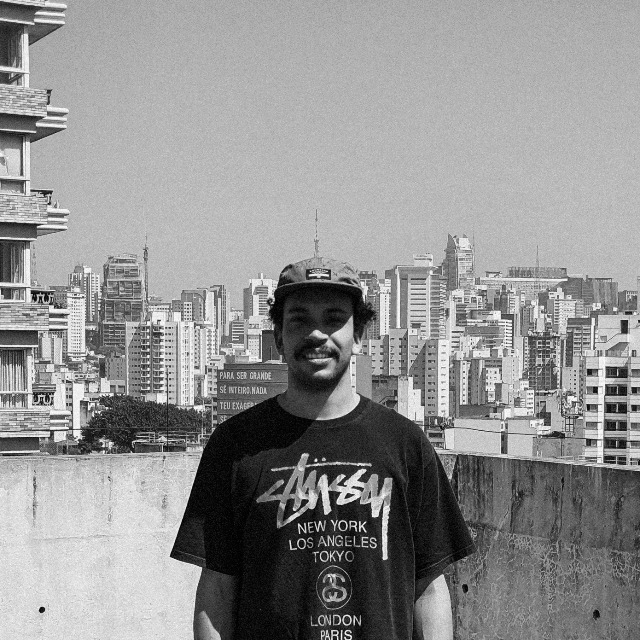

Henrique Hanemann
Formação
- Design
- Universidade Presbiteriana Mackenzie
- 3° Semestre
Experiencia
- 21 Project (evento) - Videomaker – Jun 2019 – Jul 2019
- THE SEND (evento) - Videomaker – Jun 2019 – Jul 2019
- Big Wave Media - Videomaker – Ago 2019 – Mai 2020
- DjWolf – Designer e Videomaker – Abr 2020 – Atual
Skills
- Espanhol - Fluente
- Adobe Premiere - Avançado
- Adobe Lightroom - Avançado
- Photoshop – Avançado
- Operação de câmeras DSLR e Mirrorless
Cursos Livres
- Illustrator – Senac - 28 Horas
- Workshop - Saga – 8 Horas
- Desenho Artístico – Sonyc Art
- Fjr school – FjrCrew - Produção Audiovisual
- Seja você mesmo - RabbitFilms – Audiovisual
EXPERIÊNCIA VOLUNTÁRIA
- Zion Church – Videomaker/fotografo Nov 2018 – Atual
- Dunamis Conference 2016 – 2017 – 2018 – 2019 - Backstage
- The Send – Videomaker - Fev 2020